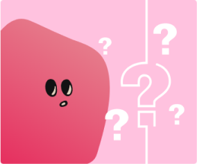

資訊太多怎麼讀? 先來媒體試毒

【媒體試毒】第一期 為什麼我們需要媒體識讀？
MT 將在每週三出版一系列的懶人包，內容包含媒體識讀 ( 媒體素養 ) 概念的探討...
【媒體試毒】第二期 廣電三法 ( 1 ) 無線必載規定
你是否常常覺得電視媒體的內容良莠不齊？你是否覺得電視台總是被收視率和財團...

【媒體試毒】第七期 媒體帶風向？
你是否經常於電視看到許多政治新聞，「傳聞」誰誰誰又要出...
【媒體試毒】第一期 為什麼我們需要媒體識讀？
MT 將在每週三出版一系列的懶人包，內容包含媒體識讀 ( 媒體素養 ) 概念的探討...
【媒體試毒】第二期 廣電三法 ( 1 ) 無線必載規定
你是否常常覺得電視媒體的內容良莠不齊？你是否覺得電視台總是被收視率和財團...
【媒體試毒】第七期 媒體帶風向？
你是否經常於電視看到許多政治新聞，「傳聞」誰誰誰又要出...
關於媒體試毒
官方網站
加入我們
客服中心
異業合作
媒體試毒產品
原創節目
破解謠言小幫手
編輯小聚
週邊商品
© 2021 Media Taste Company. All rights reserved.